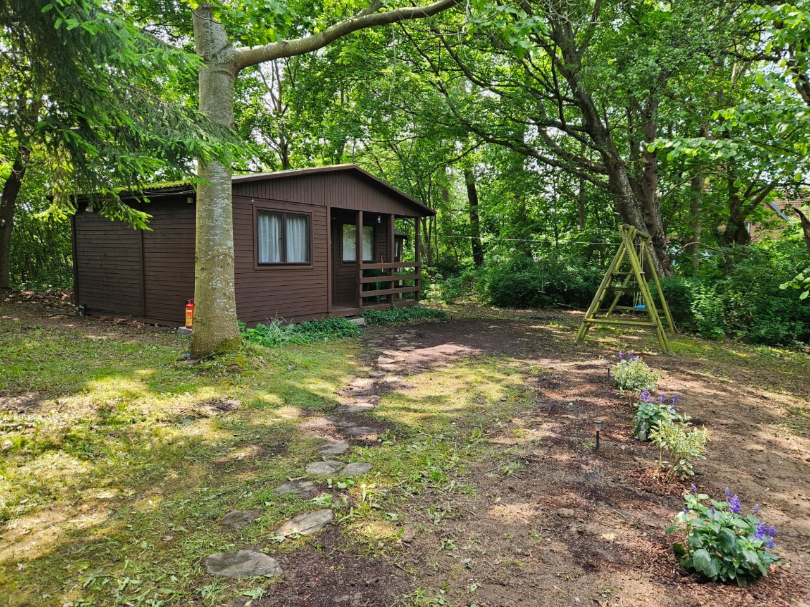

Domek
w Rusinowie
Letnie schronienie z dala od zgiełku — wśród starych drzew owocowych.
Masz dość tłumu, parawanów i hałasu?
Szukasz miejsca, gdzie morze szumi ciszej, a śpiew ptaków zagłuszy telefon służbowy?
Mamy coś wyjątkowego. Zapraszamy do domku letniskowego ukrytego wśród starych drzew owocowych, zaledwie kilkanaście minut spacerem od szerokiej, niemal bezludnej plaży.
Zdjęcia domku
Film z domku
Co na Ciebie czeka?
Miejsce do spania dla 2–4 osób — 2 łóżka pojedyncze oraz 1 podwójne (narożnik). Nowe, świeże wnętrze gotowe na Twoje przybycie.
Tuż obok, po drugiej stronie drogi (nie na posesji): plac zabaw, boisko do koszykówki i miejsce na ognisko.
Lokalizacja
Rusinowo to maleńka, nadmorska miejscowość na środkowym wybrzeżu — między Darłowem a Ustką. Nie znajdziesz jej w folderze biura podróży. Spokój i przestrzeń znajdziesz tutaj.
Przyjedź odpocząć
O cenę i wolne terminy zapytaj telefonicznie lub mailowo.